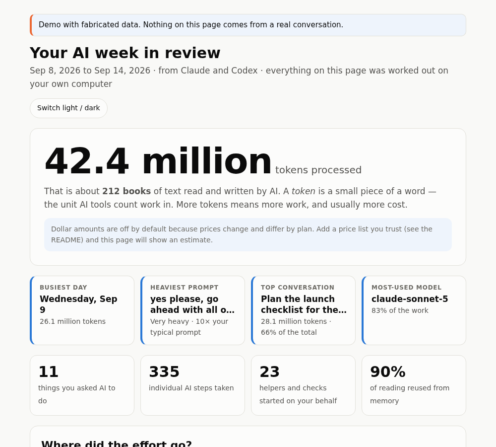

See where your AI tokens go, in plain English.
Token Explorer reads the usage records Claude Code and Codex already keep on your computer, then explains what happened: what was heaviest, who did the work, and why. Ask a question, or open one page anyone can read.
Works with Claude Code, Codex, or both. Nothing is uploaded.

Made for people who don't read logs
Other trackers are built for developers, with terminals and dashboards. Token Explorer is built to be understood by anyone who uses AI and wants to know where it went.
Every number is explained
Each figure comes with an everyday comparison, such as "about 212 books of text", and the page opens with a headline that fits the period: a day, a week or a month in review.
It says how sure it is
Links between sessions are marked exact or inferred. Explanations are marked "possible, not proven". No prices ship with the tool, so it never shows a dollar figure it can't stand behind.
Private by design
The collector and the report make no network requests. There is no server, no account and no upload. Your logs are read where they already are.
Ask in plain words
Use it as a skill inside your assistant, then talk to it like a person. It tells you the exact time range it used, every time.
- How much AI did I use last week?
- What were my top conversations from the last 7 days?
- Why was my most expensive prompt so big?
- Make me a report I can look at.
Periods it understands: today, yesterday, the last day, last 3 days, this or last week, this or last month, and exact date ranges.
One prompt, taken apart
Big totals rarely come from big requests. Every step re-reads the conversation so far, so a long conversation gets heavy even when little new text is written. Token Explorer shows that for any single prompt, with a step-by-step chart.
How it works
Install once
One command adds the skill to Claude Code, Codex or both.
Ask a question
It reads the usage logs your tools already keep, joins helpers and hand-offs back to the prompt that caused them, and answers.
Read the page
Open a single HTML file. It works offline, in light or dark mode, and every chart has a table view.
Install
Python 3.9 or newer, no other packages. Pick the way that suits you.
Any agent that supports skills
npx skills add krisnaparahita/Ai-tokenExplorer --global
Claude Code plugin
/plugin marketplace add krisnaparahita/Ai-tokenExplorer /plugin install token-audit@token-audit
From a clone, for the tool you use
git clone https://github.com/krisnaparahita/Ai-tokenExplorer.git cd Ai-tokenExplorer python3 scripts/install.py --target codex # or: claude, or leave off for both
Then ask: /token-audit how much AI did I use last week? In Codex, use $token-audit.
What it can't see
It is honest about its limits, and so are we.
- Only work that was written to log files on your computer. Chats in a browser or phone app, and cloud-only tools, leave nothing to read.
- Chat apps that run uploaded skills in a cloud sandbox usually can't see the folders on your computer. Use Claude Code or Codex for automatic collection.
- Tokens are processed work, not dollars and not your plan's allowance.
- Hand-offs between tools are matched by wording and timing, so they are labelled inferred.
Questions
Does it show what I spent in dollars?
Not by default. Prices change and depend on your plan, so none ship with the tool. If you give it a price list you trust, with the date you checked it, it adds a labelled estimate.
Does anything leave my computer?
The collector and the report make no network requests. If you ask your assistant to explain a report, that uses the assistant's normal tokens like any other question.
Which tools does it read?
Claude Code and Codex natively, either alone or together. Any other tool that writes per-request usage to a local folder can be added through a small import format.
I'm not technical. Can I use it?
The reading part is built for you. Installing still takes one command in a terminal, or you can ask Claude Code or Codex to install it for you. A one-click installer isn't built yet.
Isn't there already a tool for this?
Yes, several, and some are excellent: ccusage and CodeBurn cover many more tools and show dollars. Token Explorer is aimed at explaining usage to people who don't read logs. Read the honest comparison.